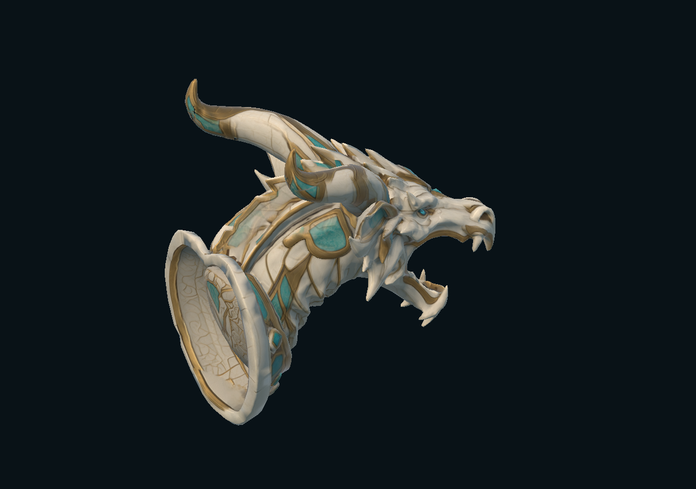
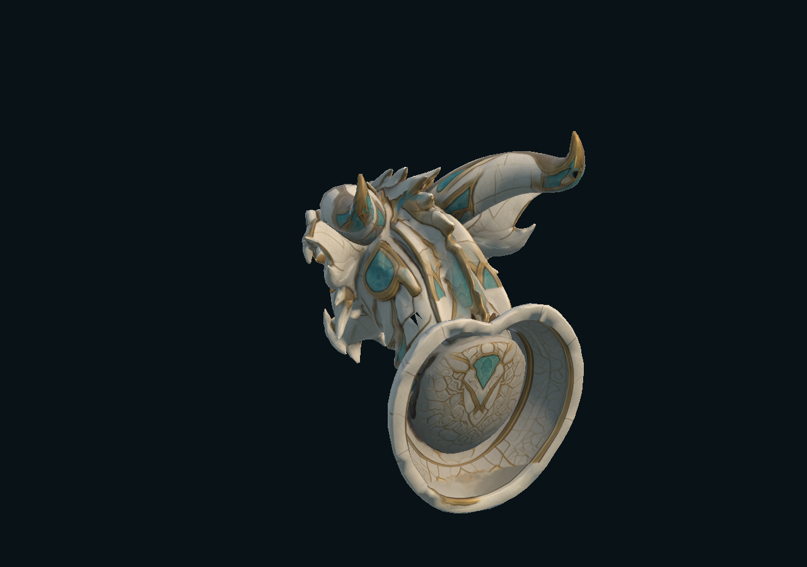

STATIC FANTASY DECOR · UNITY URP
Dragon Fountain Head
A sculpted dragon for fantasy architecture.
An open mouth, long horns and an ivory, gold and turquoise mounting collar. A decorative head sculpture with a WaterOutlet anchor for your own effect.
Submitted for Unity review

16,381triangles
1mesh parts
URPUnity materials
$4.99USD · listed price
01 / OTHER VIEWS
The supplied object, from other angles.
Screenshots of the imported asset, not concept illustrations.


02 / INCLUDED
A self-contained decorative asset.
One editable OBJ mesh, one URP material, three PNG texture maps, a viewing scene and setup documentation. Supplied as one static prefab.
Each product is supplied separately. The model and viewing scene work without the NYRAEVON game or other portfolio products.
Content & limitations
- Materials
- 1
- PNG textures
- 3
- Editable geometry
- OBJ
- Tested version
- Unity 6000.5.9f1 · URP 17.5
- Platform tested
- Windows · Direct3D 11
The head and mounting collar only. No basin, water jet, water shader or fluid simulation is included. WaterOutlet is a placement anchor. No animation, rig, sound or LODs. Coarse box collision.
Built-in, HDRP, mobile, VR and consoles are not certified. Some generated close-range details remain irregular or fused. Independent Unity import and editor rendering were checked; standalone player builds are not certified.
AI-assisted production
The base sculpture and textures were generated with Meshy. Materials, editable geometry export, documentation and Unity integration were prepared with AI assistance.